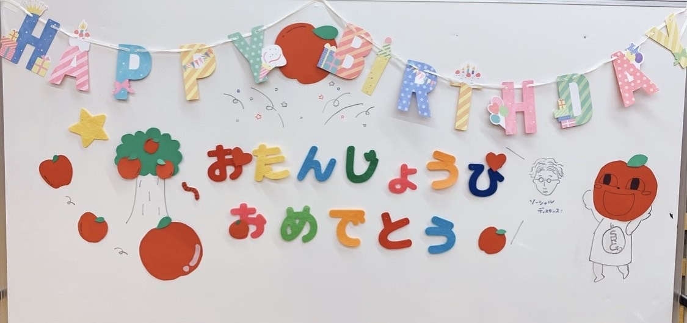
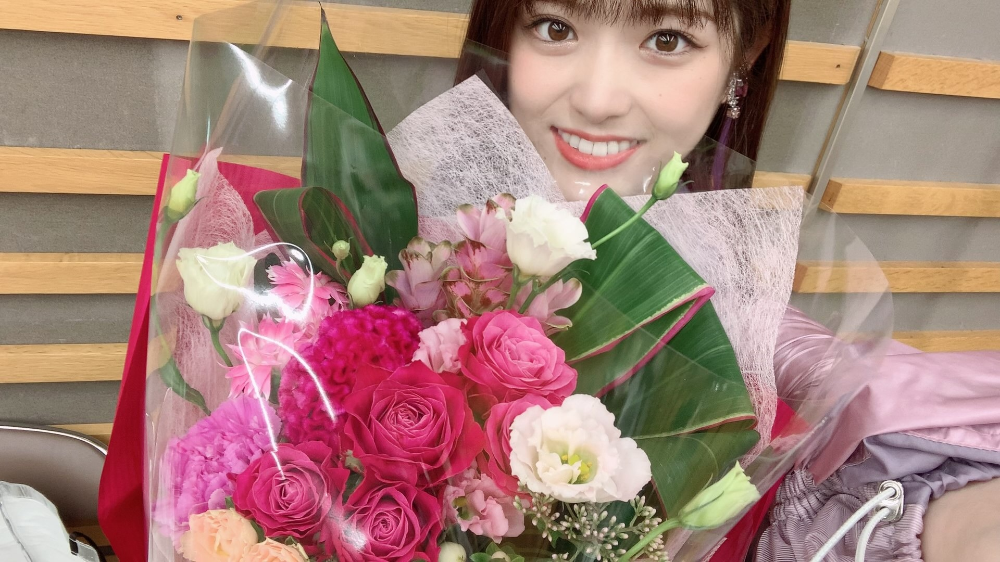
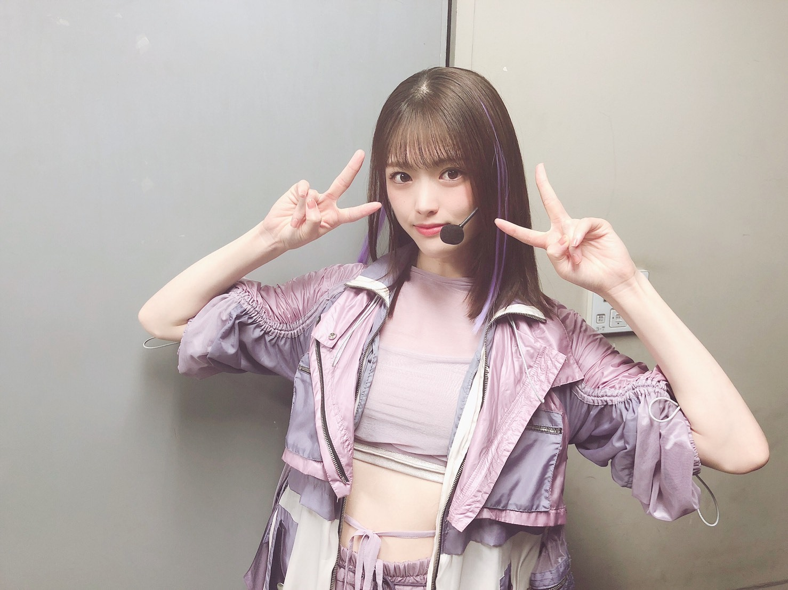
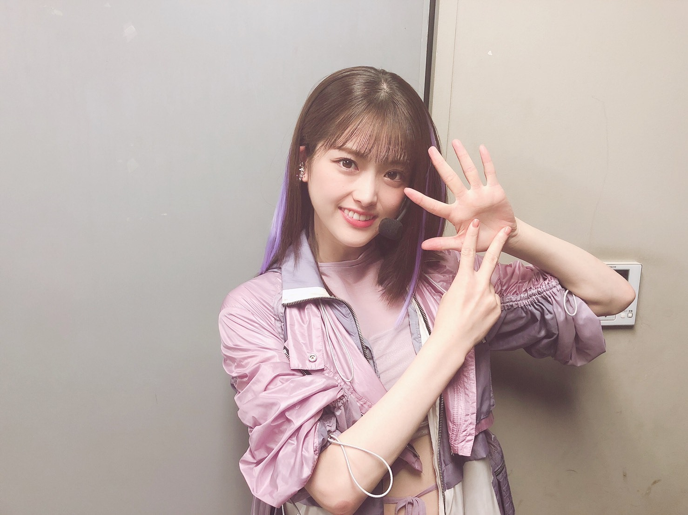

2020/0827Thu20200827(o・・o)
松村沙友理です！
本日お誕生日を迎えました！
世の中が大変なときですが
たくさんお祝いしていただき
とても幸せです(^ ^)
また一年
精一杯生きようと思います！
去年は 握手会の会場で
米俵や可愛い飾り付けをいただき
とっても可愛くてお気に入りだったのですが
今年は 握手会自体の開催もまだ難しく
みなさんとお話できる機会が少なくて
寂しく思っております（；＿；）
少しでも早く皆さんとの交流の場ができることを
待ち望んでますっm(_ _)m
今年は マネージャーさんが
こんなに可愛いボードを作ってくれましたっ♡

りんごがいっぱいでかわいー（；＿；）♡
FNS歌謡祭の現場でもお花を頂いちゃったり♡

とっても幸せな日になりました！
みなさまありがとうございます^ ^
何歳になってもおめでとう！って言ってもらえると嬉しいものですねっ*\(^o^)/*
まだまだ暑い日が続きますが
無理なさらず楽しい日々を過ごしましょう！


27最後の日にとったので
手が27ですm(_ _)m
2020/08/27 15:30
コメント(1718)
まちゅモバメありがとう！
さゆまいちゃんだぁ～
大好きすぎる♡
 ともみ
ともみ
さゆまいちゃんだぁ～
大好きすぎる♡
まちゅこんにちは(*ˊᵕˋ*）
まいやんの卒業ライブお疲れ様！
ずっと携帯だったけど見てたよ！
沢山まいやんと歌えて良かったね！
偶然を言い訳にして、流星ディスコティックがさらに好きになった♡
偶然の歌詞に『頑張れー自分よー』の所なんか勇気が出る歌詞だなぁと思った いい曲だね！最近ずっと歌ってる笑
まいやん最後のブログ書いてるね
コメントしてきたよ！
卒業寂しいね… やだね… 戻ってきて欲しいね…
またまちゅとラブラブ♡してるの見たいよー
ロマいかでキラーンってしてるの見たいよー(´•ω•̥`)
でも無理…:;(∩´﹏`∩);:
まちゅのお手紙の内容可愛すぎ♡
レッスン終わってまいやんとピアノの下に隠れて内緒話するなんて…♡
可愛すぎてそばで見て見たかったなぁ♡
お手紙読み終わった後まちゅが『まいやんいないとまちゅ頑張られへん』って言った後まいやんに言われた『大丈夫、9年間頑張って来たんだから大丈夫！』の会話可愛すぎてきゅんきゅんしちゃった♡
昨日からまいやんインスタ始めたね！
これから身近にまいやんがどんな事してるのか見れるから嬉しい！
フォローは出来ないと思うけど見てあげてね！
すっごくかわいのが投稿されてた！
何かは見てからのお楽しみ♡
これからまちゅは誰とペア組むことになるのかなぁ…
いくちゃんかなぁ？ らんらんかなぁ？ 矢久保かなぁ？
まいやんいなくてもまちゅには頑張って欲しいなぁ！
ばいばーい！
まちゅ♡……大好き♡♡
まいやんの卒業ライブお疲れ様！
ずっと携帯だったけど見てたよ！
沢山まいやんと歌えて良かったね！
偶然を言い訳にして、流星ディスコティックがさらに好きになった♡
偶然の歌詞に『頑張れー自分よー』の所なんか勇気が出る歌詞だなぁと思った いい曲だね！最近ずっと歌ってる笑
まいやん最後のブログ書いてるね
コメントしてきたよ！
卒業寂しいね… やだね… 戻ってきて欲しいね…
またまちゅとラブラブ♡してるの見たいよー
ロマいかでキラーンってしてるの見たいよー(´•ω•̥`)
でも無理…:;(∩´﹏`∩);:
まちゅのお手紙の内容可愛すぎ♡
レッスン終わってまいやんとピアノの下に隠れて内緒話するなんて…♡
可愛すぎてそばで見て見たかったなぁ♡
お手紙読み終わった後まちゅが『まいやんいないとまちゅ頑張られへん』って言った後まいやんに言われた『大丈夫、9年間頑張って来たんだから大丈夫！』の会話可愛すぎてきゅんきゅんしちゃった♡
昨日からまいやんインスタ始めたね！
これから身近にまいやんがどんな事してるのか見れるから嬉しい！
フォローは出来ないと思うけど見てあげてね！
すっごくかわいのが投稿されてた！
何かは見てからのお楽しみ♡
これからまちゅは誰とペア組むことになるのかなぁ…
いくちゃんかなぁ？ らんらんかなぁ？ 矢久保かなぁ？
まいやんいなくてもまちゅには頑張って欲しいなぁ！
ばいばーい！
まちゅ♡……大好き♡♡
さゆりん、モバメありがとう(σ≧▽≦)σ
ほんとに卒業してしまったまいやん！
ただただ「ありがとう」しかないです。
乃木坂を背負って頑張ってくれたまいやん。
そのまいやんを支えた一期生。
ありがとうございますm(__)m
ほんとに卒業してしまったまいやん！
ただただ「ありがとう」しかないです。
乃木坂を背負って頑張ってくれたまいやん。
そのまいやんを支えた一期生。
ありがとうございますm(__)m
まちゅインスタ更新ありがとう！
いい写真だね～
まちゅが楽しめてたみたいで嬉しい(*ˊ˘ˋ*)♡
ともみ
いい写真だね～
まちゅが楽しめてたみたいで嬉しい(*ˊ˘ˋ*)♡
さゆりちゃ～んた゛い゛す゛き゛～
麻衣ちゃんが卒業して寂しさもまだまだあると思うけど
か゛ん゛は゛る゛ん゛や゛て゛～
ずっと応援してるよ～
麻衣ちゃんが卒業して寂しさもまだまだあると思うけど
か゛ん゛は゛る゛ん゛や゛て゛～
ずっと応援してるよ～
さゆりんご！
モバメ&インスタグラム
素敵な写真をありがとう！
嬉しいよー！！
大好き！
モバメ&インスタグラム
素敵な写真をありがとう！
嬉しいよー！！
大好き！
さゆりん、こんばんは〜。雨ですねー。
りんご生活ありがとうございますっ、ケーキぃ♪。
まいやんとの写真良きですね〜、美人さん達^ ^。
９年も経ったんですね、感慨深いです。ずっと居てほしいと言うわがままは言えないですが、ずっと応援する事は出来そうな気がします…。
りんご生活ありがとうございますっ、ケーキぃ♪。
まいやんとの写真良きですね〜、美人さん達^ ^。
９年も経ったんですね、感慨深いです。ずっと居てほしいと言うわがままは言えないですが、ずっと応援する事は出来そうな気がします…。
沙友理ちゃんこんばんは(｡･ω･)ﾉﾞ
今日も1日お疲れ様です！
モバメありがとう！可愛い2人が
いつも俺はブログのコメントに風邪ひかないようにとか書いてるのに
見事に今日風邪ひきました...
やらかした〜早く治します！
沙友理ちゃんはまいちゅんから十万石まんじゅう貰ったかな？
それ食べて元気に風邪ひかないようにお過ごしください(〃▽〃)
それじゃ今日は早く寝ますね！
おやすみなさい
今日も1日お疲れ様です！
モバメありがとう！可愛い2人が
いつも俺はブログのコメントに風邪ひかないようにとか書いてるのに
見事に今日風邪ひきました...
やらかした〜早く治します！
沙友理ちゃんはまいちゅんから十万石まんじゅう貰ったかな？
それ食べて元気に風邪ひかないようにお過ごしください(〃▽〃)
それじゃ今日は早く寝ますね！
おやすみなさい
まちゅ～～～♪♪
こんばんまっちゅん！！
モバメもインスタもありがとうございまっちゅん！！！
めっちゃ可愛かったなぁ(*ฅ́˘ฅ̀*)♡
卒コン本当に良かったよー！！
人生で1番、感動して泣いたライブなのは間違いないね。
まちゅは宇宙でいちばんかわいいし、
さゆまいは特にだし……
ほんと1期生の関係性って本当に尊いなぁって思うよ。
職場の人が結構見てて、
まちゅのこと可愛いねって言ってくれたの嬉しいんだァ((o(｡>ω<｡)o))
ケーキも美味しそうだね♪♪
今週もまちゅ大変だと思うけど、毎日お仕事頑張ってね！！✧*｡٩(ˊωˋ*)و✧*｡
まちゅのお写真めっちゃパワーを貰えますよ。
本当にありがとうね(≧∇≦)
また気が向いた時によろしくお願いします♪♪
明日もまちゅの笑顔満開の一日でありますように！！！
おやすみなさゆりんご！！
またね。
たっかんより
こんばんまっちゅん！！
モバメもインスタもありがとうございまっちゅん！！！
めっちゃ可愛かったなぁ(*ฅ́˘ฅ̀*)♡
卒コン本当に良かったよー！！
人生で1番、感動して泣いたライブなのは間違いないね。
まちゅは宇宙でいちばんかわいいし、
さゆまいは特にだし……
ほんと1期生の関係性って本当に尊いなぁって思うよ。
職場の人が結構見てて、
まちゅのこと可愛いねって言ってくれたの嬉しいんだァ((o(｡>ω<｡)o))
ケーキも美味しそうだね♪♪
今週もまちゅ大変だと思うけど、毎日お仕事頑張ってね！！✧*｡٩(ˊωˋ*)و✧*｡
まちゅのお写真めっちゃパワーを貰えますよ。
本当にありがとうね(≧∇≦)
また気が向いた時によろしくお願いします♪♪
明日もまちゅの笑顔満開の一日でありますように！！！
おやすみなさゆりんご！！
またね。
たっかんより
おはよう
卒業コンサートお疲れさまでした
おかげで最高の卒業セレモニーを
大好きなまいやんにプレゼントすることが
できたのではないかと思います
まいやん、卒業しちゃったね...
お見立て会の頃から、
乃木坂を応援してきて約9年間
本当に本当にいろんなことがありました
それは乃木坂メンバー内でのこともあるし、
自分が乃木坂を通してファン活動をしていく中でも様々な出来事や出会いがありました
長かった...？短かった...？
自分でもよくわかりません
乃木坂でまいやんを見つけてから
本当に毎日が楽しくて、
夢中で乃木坂を応援してきました
自分の青春はまいやんと共にありました
今更、まいやんの魅力を語るつもりは
ありませんが、乃木坂に一つの色をつけて
くれたことは間違いないと思ってます
まいやんが卒業したら...
自分も乃木坂ファンを卒業するつもりでした
でも、もうちょっと見ていたい
自分の中でいつの間にかそう思えるグループ
になっていました
まいやんがいなくなった乃木坂
でも、しっかりとその遺伝子は受け継がれてます
もう少し応援してもいいですか？
卒業コンサートお疲れさまでした
おかげで最高の卒業セレモニーを
大好きなまいやんにプレゼントすることが
できたのではないかと思います
まいやん、卒業しちゃったね...
お見立て会の頃から、
乃木坂を応援してきて約9年間
本当に本当にいろんなことがありました
それは乃木坂メンバー内でのこともあるし、
自分が乃木坂を通してファン活動をしていく中でも様々な出来事や出会いがありました
長かった...？短かった...？
自分でもよくわかりません
乃木坂でまいやんを見つけてから
本当に毎日が楽しくて、
夢中で乃木坂を応援してきました
自分の青春はまいやんと共にありました
今更、まいやんの魅力を語るつもりは
ありませんが、乃木坂に一つの色をつけて
くれたことは間違いないと思ってます
まいやんが卒業したら...
自分も乃木坂ファンを卒業するつもりでした
でも、もうちょっと見ていたい
自分の中でいつの間にかそう思えるグループ
になっていました
まいやんがいなくなった乃木坂
でも、しっかりとその遺伝子は受け継がれてます
もう少し応援してもいいですか？
さゆりん、おはようございます
今日も、がんばってね
インスタ更新ありがとうね
さゆりん、可愛いね
さゆりんの、活躍で、元気もらっているよ
沢山の楽しみを、ありがとうね、さゆりん
身体に気をつけて、お仕事してね
またね大好き過ぎる❤️❤️❤️さゆりん、頑張れ
可愛いよ
今日も、がんばってね
インスタ更新ありがとうね
さゆりん、可愛いね
さゆりんの、活躍で、元気もらっているよ
沢山の楽しみを、ありがとうね、さゆりん
身体に気をつけて、お仕事してね
またね大好き過ぎる❤️❤️❤️さゆりん、頑張れ
可愛いよ
おはようございます(*´ｰ｀)ゞ
モバメにインスタ更新ありがとう
まいやんとの写真
見せてくれてありがとう
嬉しいです
まいやんと思い出の写真は
いっぱい撮れたかな
ライブ
無観客ならではの演出で良かったよね
楽しんでなによりでした
6年前の今日は
さゆりんと初めて会って握手をして
感激していたなぁ
大切な思い出です
それではまたね
さゆりんp(´▽`o)ﾉﾞ ﾌｧｲﾄｫ〜♪
モバメにインスタ更新ありがとう
まいやんとの写真
見せてくれてありがとう
嬉しいです
まいやんと思い出の写真は
いっぱい撮れたかな
ライブ
無観客ならではの演出で良かったよね
楽しんでなによりでした
6年前の今日は
さゆりんと初めて会って握手をして
感激していたなぁ
大切な思い出です
それではまたね
さゆりんp(´▽`o)ﾉﾞ ﾌｧｲﾄｫ〜♪
沙友理ちゃん
おはようございます!
Instagram
お写真とても素敵です
最高の記念になりましたね
載せてくれて
ありがとうございます
今日は高校生クイズでしょうか
新曲初披露
がんばって下さいね
どんな楽曲か
物凄く楽しみです〜
(^_^)/~
おはようございます!
お写真とても素敵です
最高の記念になりましたね
載せてくれて
ありがとうございます
今日は高校生クイズでしょうか
新曲初披露
がんばって下さいね
どんな楽曲か
物凄く楽しみです〜
(^_^)/~
沙友理ちゃん
こんにちは
昨日はモバメでまいやんとのツーショット
インスタでも卒業コンサートのときの写真をありがとう
まいやんブルーの真っ只中かなと思うけど沙友理ちゃんからのファンへの発信は嬉しいです
沙友理ちゃんってなんとなく大切な思い出は内にとどめてる印象もあるから特に今回は嬉しいです
乃木坂工事中のBlu-ray観ました
特にグアム回は面白かったです
からあげ姉妹とかずみんのコメンタリーだから全然違う話ばかりでしたけど面白かった
グアム編は隠しでタイ3人旅も収録されてたから松村推しには本当にお得でした
他の子の工事中も観たんですけどどの3期生のコメンタリーでも星野みなみちゃん白石麻衣ちゃん松村沙友理ちゃんが出てくる場面は後輩ちゃんから声が上がってかわいいとかきれいとか言われてるの見ると嬉しくなっちゃいますね
そろそろ冬が近づいてきてきた感じします
暖かくしてがんばりまっちゅんです
こんにちは
昨日はモバメでまいやんとのツーショット
インスタでも卒業コンサートのときの写真をありがとう
まいやんブルーの真っ只中かなと思うけど沙友理ちゃんからのファンへの発信は嬉しいです
沙友理ちゃんってなんとなく大切な思い出は内にとどめてる印象もあるから特に今回は嬉しいです
乃木坂工事中のBlu-ray観ました
特にグアム回は面白かったです
からあげ姉妹とかずみんのコメンタリーだから全然違う話ばかりでしたけど面白かった
グアム編は隠しでタイ3人旅も収録されてたから松村推しには本当にお得でした
他の子の工事中も観たんですけどどの3期生のコメンタリーでも星野みなみちゃん白石麻衣ちゃん松村沙友理ちゃんが出てくる場面は後輩ちゃんから声が上がってかわいいとかきれいとか言われてるの見ると嬉しくなっちゃいますね
そろそろ冬が近づいてきてきた感じします
暖かくしてがんばりまっちゅんです
沙友理さん、こんにちは！
モバメ、ありがとう！
今日のおやつは、イチゴタルトかな？
光沢があって、色鮮やかだから、本当に美味しそうだね。
今日はお仕事だから、メンバーと一緒に頬張ったのかな？
一切れじゃ、足りそうにないね。(笑)
いくつ、ペロリと食べたのかな？
これで充電したパワー、エネルギーを新曲披露のパフォーマンスにぶつけるのかな？
頑張ってね！
楽しんでね！
モバメ、ありがとう！
今日のおやつは、イチゴタルトかな？
光沢があって、色鮮やかだから、本当に美味しそうだね。
今日はお仕事だから、メンバーと一緒に頬張ったのかな？
一切れじゃ、足りそうにないね。(笑)
いくつ、ペロリと食べたのかな？
これで充電したパワー、エネルギーを新曲披露のパフォーマンスにぶつけるのかな？
頑張ってね！
楽しんでね！
白石麻衣卒業ライブ、観させてもらいました。
本来東京ドーム開催だったものが、コロナ禍のために配信ライブになってしまったけど、より多くのファンがリアルタイムに観れたことはそれはそれで良かったと思う。
まぁトラブルで開始が遅れたのはちょっと痛かったけどね。高校生メンバーは最後まで居れなくなっちゃったもんね。
配信ライブならではの演出、プロジェクションマッピングとかを使ったのかな？
とてもよかったし、事前に録音したコールを入れたりして観客がいるように見せるのはリアルなライブのように感じられてよかった。でも「逃げ水」のサビ前の「月の光」のとこはライブだとファンがほぼ自分の推しメンを叫んでるだけで「動物園」って言われてる(笑)んだけど、今回はライブで初めて静かな「月の光」が聴けたなぁ(笑)
まいやんの卒業ライブだけど、2〜4期の代表曲をまいやんがいっしょに歌ったりして、なんか乃木坂46の転換期を表しているかのようで、最後はしみじみとしちゃったな。
でも、これからの乃木坂46も楽しみにしてるよ。
本来東京ドーム開催だったものが、コロナ禍のために配信ライブになってしまったけど、より多くのファンがリアルタイムに観れたことはそれはそれで良かったと思う。
まぁトラブルで開始が遅れたのはちょっと痛かったけどね。高校生メンバーは最後まで居れなくなっちゃったもんね。
配信ライブならではの演出、プロジェクションマッピングとかを使ったのかな？
とてもよかったし、事前に録音したコールを入れたりして観客がいるように見せるのはリアルなライブのように感じられてよかった。でも「逃げ水」のサビ前の「月の光」のとこはライブだとファンがほぼ自分の推しメンを叫んでるだけで「動物園」って言われてる(笑)んだけど、今回はライブで初めて静かな「月の光」が聴けたなぁ(笑)
まいやんの卒業ライブだけど、2〜4期の代表曲をまいやんがいっしょに歌ったりして、なんか乃木坂46の転換期を表しているかのようで、最後はしみじみとしちゃったな。
でも、これからの乃木坂46も楽しみにしてるよ。
さゆりん！お誕生日おめでとう
私は辛い事があっても、いつもさゆりんの笑顔に元気と幸せをもらってます。ありがとう
さゆりんもこの先ずっと幸せでありますようずっと応援します‼︎
私は辛い事があっても、いつもさゆりんの笑顔に元気と幸せをもらってます。ありがとう
さゆりんもこの先ずっと幸せでありますようずっと応援します‼︎


昨夜から２通もモバメ
ありがとう
嬉しいです！
まいやんとのツーショットも可愛いし
ケーキもとても美味しそう
沙友理ちゃんの元気が
ファンの元気です
がんばって下さいね
まだまだ応援していますよ〜